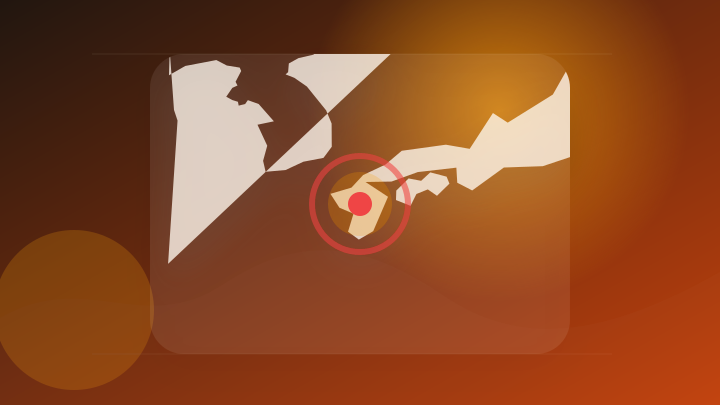
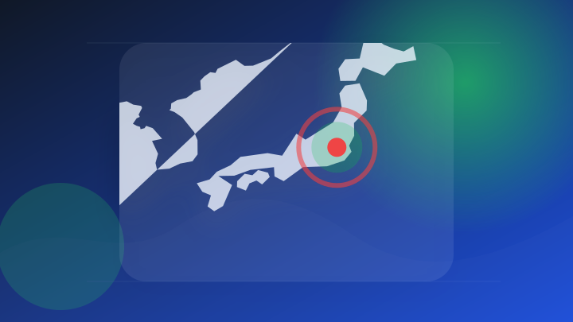
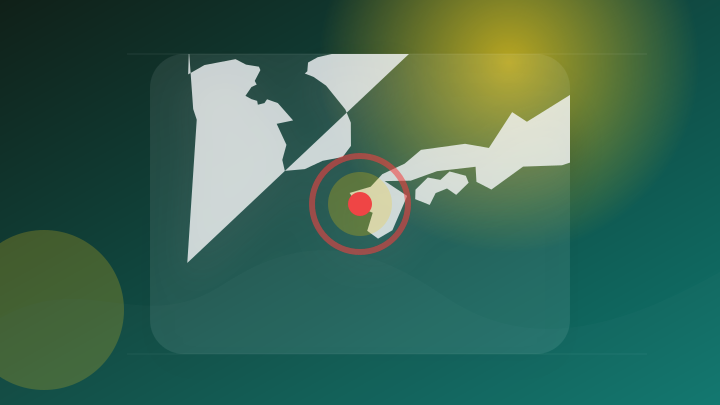
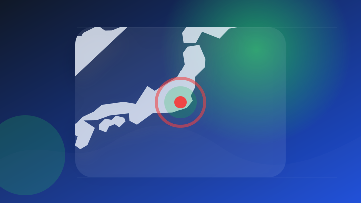
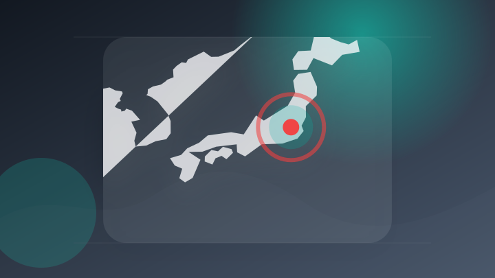
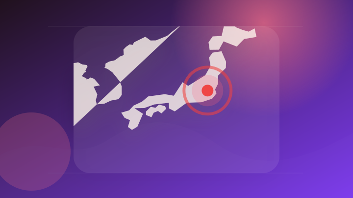

AI
6 topics
ChatGPTが世界規模で大規模障害 数万人がログイン不能に 公式が緊急復旧、約1時間で回復
注目ポイント注目度 100点
Chrome 151が重大な脆弱性2件を修正、OpenAI研究者はFirefox 154にも同日貢献
注目ポイント注目度 67点
「ロボットのChatGPTモーメントが近づいている」 中国UnitreeのCEO、世界ロボット大会で言及
注目ポイント注目度 64点
〔海外決算〕中国アリババ、9％増収＝AI成長も巨額投資で減益―4～6月期(時事通信)
注目ポイント注目度 61点
OpenAIのIPOは2027年上場へ CFOサラ・フライアー氏が社員に示した新目標
注目ポイント注目度 61点
Unitree CEO、ロボットの「ChatGPT時代」到来時期を示唆
注目ポイント注目度 61点
IT業界
6 topics
大阪万博の関係者情報が漏えいか 再委託先のMicrosoft 365アカウントに不正アクセス
注目ポイント注目度 64点
ローカルAIが効率的に動いているか「タスク マネージャー」でチェック ～Microsoftが解説
注目ポイント注目度 64点
サイバーセキュリティクラウド[4493]：耐量子計算機暗号（PQC）対応に向けた技術検証を開始 ～量子コンピュータ時代を見据え、次世代のWebセキュリティ環境の実現へ～ 2026年8月20日(適時開示) ：日経会社情報DIGITAL
サイバーセキュリティクラウド[4493]：耐量子計算機暗号（PQC）対応に向けた技術検証を開始 ～量子コンピュータ…
注目ポイント注目度 64点
市場動向：Googleとセールスフォース、衛星スタートアップMuon Spaceの2億5,000万ドルの資金調達ラウンドを支援
市場動向：Googleとセールスフォース、衛星スタートアップMuon Spaceの2億5,000万ドルの資金調達ラ…
注目ポイント注目度 61点
Google、米大学生にAI Pro無料1年｜新設Student Hubも同時提供
Google、米大学生にAI Pro無料1年
注目ポイント注目度 61点
「Google Pixel 11 Pro」対応クリアケースが登場！ FIRMEから発売開始
注目ポイント注目度 61点
政治
6 topics
バーナム英国首相との電話会談についての会見
注目ポイント独立2媒体｜注目度 70点
韓国政府関係者狙ったサイバー攻撃 北朝鮮ハッキング組織「ラザルス」が関与か
注目ポイント注目度 70点

九州への旅行代金を割引へ 熊本地震で政府が観光業への支援を検討
注目ポイント注目度 70点

米国の国際司法裁判所（ICC）関係者への制裁措置に対する日本政府の毅然とした外交対応を求める声明
注目ポイント注目度 67点
高市総理が英バーナム首相と初の電話会談「安全保障などで認識を共有」
注目ポイント注目度 64点
高市首相 英首相と初の電話会談 安全保障など協力推進で一致
注目ポイント注目度 64点
社会
6 topics
「進入可の合図」のはずが実際には…作業員4人死亡、なぜ起きたのか
注目ポイント注目度 70点
東武日光線４人死亡事故 運輸安全委が調査官派遣 警察も調べ
注目ポイント注目度 70点
東武４人死亡事故、見張り員が作業員退避完了の旗合図…「中継見張員」と連携取れていなかった可能性
注目ポイント注目度 70点

元西海市議を逮捕 女性の口座から396万円盗んだ疑い、容疑は否認 [長崎県]
注目ポイント注目度 70点
【殺人未遂事件】踏切内で何が…逮捕されたJAF職員の男「車間が近かったことを注意できたので去った」 事件直後、母親に“あおり運転されたから自分は車から出たんだ”
【殺人未遂事件】踏切内で何が…逮捕されたJAF職員の男「車間が近かったことを注意できたので去った」 事件直後、母親…
注目ポイント注目度 70点
【情報まとめ】東武鉄道が会見 4人死亡列車事故 見張り員が所定の場所にいなかった可能性
注目ポイント注目度 70点
事件・事故
6 topics
【発令】交通死亡事故が相次ぎ「多発警報」 暑い時期の運転に注意《新潟》（2026年8月20日掲載）｜TeNY NEWS NNN
【発令】交通死亡事故が相次ぎ「多発警報」 暑い時期の運転に注意《新潟》（2026年8月20日掲載）
注目ポイント独立2媒体｜注目度 95点

東京・小金井市の強盗予備事件で「リクルート役」の男逮捕 警視庁は「案件屋」の関与も捜査 秘匿アプリで実行役募集か
注目ポイント注目度 70点
JRA騎手が衝突事故 一方の車の男性死亡 北海道函館市 [北海道]
注目ポイント注目度 70点
列車衝突４人死亡 東武鉄道「重大事故」と謝罪 ３時間に及んだ会見の主なやりとり
注目ポイント注目度 67点
金属片に接触か、男性従業員が右足から出血し死亡 宍粟の金属加工会社|事件・事故
金属片に接触か、男性従業員が右足から出血し死亡 宍粟の金属加工会社
注目ポイント注目度 67点
万博工事めぐる背任容疑で竹中工務店の“元所長”が逮捕 「こういった事件が起きたこと非常に残念」吉村知事 夢洲2期などでの“指名停止の可能性”は「事実関係を注視」
万博工事めぐる背任容疑で竹中工務店の“元所長”が逮捕 「こういった事件が起きたこと非常に残念」吉村知事 夢洲2期な…
注目ポイント注目度 67点
災害
6 topics
気象庁が災害発生メール誤配信 自治体など向け「震度7の地震発生」
注目ポイント注目度 100点

【台風情報】台風18号の今後の進路予想は 23日午後9時には「非常に強い」勢力で日本の南に達する予報
注目ポイント注目度 70点
【台風情報まとめ】台風18号の進路が北寄りに 来週、沖縄・奄美・九州方面に影響か 8月で5個目の発生は8年ぶり 今後の動きは
【台風情報まとめ】台風18号の進路が北寄りに 来週、沖縄・奄美・九州方面に影響か 8月で5個目の発生は8年ぶり 今…
注目ポイント注目度 70点
【台風情報】台風18号 来週、鹿児島県内に接近するおそれ【気象予報士解説】
注目ポイント注目度 70点
千葉の豪雨・冠水災害うけ 沖縄総合事務局がうみそらトンネル排水設備の点検実施
注目ポイント注目度 70点
100種超の地図で現場を可視化、はんぽさきの地図アプリ 通信圏外でも道路巡視や災害対応を支援
注目ポイント注目度 70点
国際
2 topics
ライフ
4 topics
地震で避難生活送る被災者に料理教室（HAB北陸朝日放送）
注目ポイント注目度 67点
『ファンタジーライフｉ グルグルの竜と時をぬすむ少女』スマホ版が配信開始―『レイトン』&『妖怪ウォッチ』コラボ装備も実装
『ファンタジーライフｉ グルグルの竜と時をぬすむ少女』スマホ版が配信開始―『レイトン』&『妖怪ウォッチ』コラボ装備…
注目ポイント注目度 61点
スマホ版「ファンタジーライフｉ グルグルの竜と時をぬすむ少女」，本日配信開始。クロスセーブにも対応
注目ポイント注目度 61点
生活道路における自動車の法定速度が引き下げられます（令和8年9月1日施行）
city.fujimino.saita…
注目ポイントAI｜独立2媒体｜注目度 61点
ゲーム
5 topics
Nintendo Switch(TM)用ソフト 『あやかしごはん ～おかわりっ！～ for S』 本日発売！
注目ポイント独立2媒体｜注目度 66点
PlayStation5 新型 DualSense Edge ワイヤレスコントローラー(CFI-ZCP2J)が2026年8月31日に発売！？新型ケース、USBケーブル(C-C)の仕様変更などが公式サイトに掲載。
PlayStation5 新型 DualSense Edge ワイヤレスコントローラー(CFI-ZCP2J)が20…
注目ポイント注目度 61点
サムスンが8nm製造価格を1割弱値上げ。Nintendo Switch 2も新たなコスト増へ
注目ポイント注目度 61点
任天堂公式ライセンスのmicroSDカード256GBが6,980円から8,980円に値上げ。昨今のストレージ価格上昇を受けてか
任天堂公式ライセンスのmicroSDカード256GBが6,980円から8,980円に値上げ。昨今のストレージ価格上…
注目ポイント注目度 61点
PlayStation Link USBアダプター新型CFI-ZWA3J 8月20日発売 3480円
PlayStation Link USBアダプター新型CFI
注目ポイント注目度 61点
経済
6 topics
好決算 半分は一過性か【マーケットビュー】
注目ポイント注目度 64点
コアコンセプト・テクノロジー（4371） 2026年12月期第2四半期決算説明
注目ポイント注目度 61点

日本株の決算前半戦を読み解く 焦点は中東情勢の逆風 vs 企業の値上げ力 野村證券ストラテジストが解説
注目ポイント注目度 61点
ディア株が3%超上昇、第3四半期決算が市場予想を上回る 執筆
Investing.com - FX | 株式市場…
注目ポイント注目度 61点
(株)Ｓｋｙｆａｌｌ【625A】：企業情報（決算時期や平均年収、代表者名、IR動画など）
注目ポイント注目度 61点
ａｋｉｐｐａ(株)【627A】：企業情報（決算時期や平均年収、代表者名、IR動画など）
注目ポイント注目度 61点
金融
1 topics
エンタメ
3 topics
gumiの予測エンタメサービス「ヨソクヒロバ」、ニュースアプリ「グノシー」iOS版で提供開始（あたらしい経済）
注目ポイント注目度 61点
音楽レーベル・マーチャンダイジング企画担当の募集を開始しました | お知らせ | 中途採用 SQUARE ENIX -RECRUITING-
音楽レーベル・マーチャンダイジング企画担当の募集を開始しました | お知らせ | 中途採用 SQUARE ENIX…
注目ポイント注目度 61点
ロボット×エンタメで協奏を開始・フィジカルAI人材育成でも連携 AiHUBとRobotMateHub 1枚目の写真・画像
ロボット×エンタメで協奏を開始・フィジカルAI人材育成でも連携 AiHUBとRobotMateHub 1枚目の写真…
注目ポイント注目度 61点